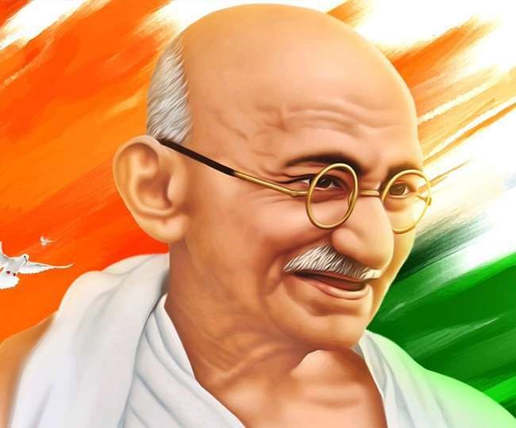
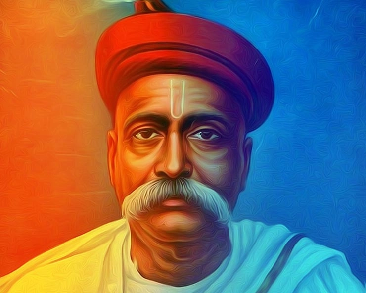
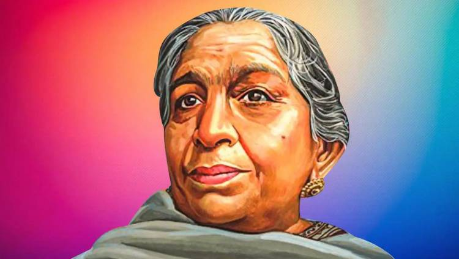
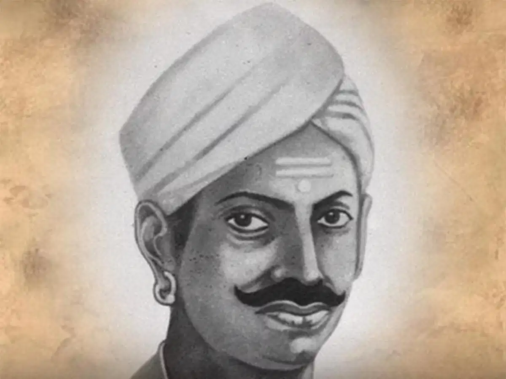
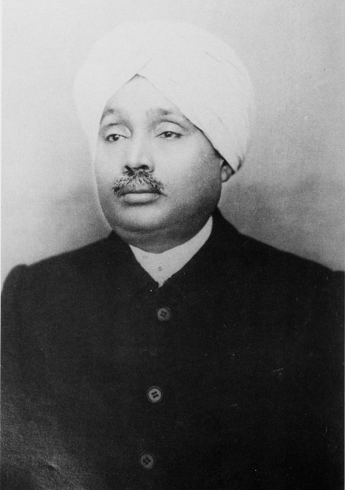

Freedom Fighters & Leaders
Mahatma Gandhi
Mohandas Karamchand Gandhi was an Father Of India, Indian lawyer, anti-colonial nationalist, and political ethicist who employed nonviolent resistance to lead the successful campaign for India's independence from British rule. He inspired movements for civil rights and freedom across the world.
Jawaharlal Nehru

Jawaharlal Nehru was an Indian anti-colonial nationalist, secular humanist, social democrat, author and statesman who was a central figure in India during the middle of the 20th century. Nehru was second only to Mahatma Gandhi in leading the Indian nationalist movement in the 1930s and 1940s
Bhagat Singh

Bhagat Singh was an Indian anti-colonial revolutionary, who participated in the mistaken murder of a junior British police officer in December 1928 in what was to be retaliation for the death of an Indian nationalist.
Bal Gangadhar Tilak
Bal Gangadhar Tilak, endeared as Lokmanya, was an Indian nationalist, teacher, and an independence activist. He was one third of the Lal Bal Pal triumvirate. The British colonial authorities called him "The father of the Indian unrest"
Sarojini Naidu
Sarojini Naidu was an Indian political activist and poet who served as the first Governor of United Provinces, after India's independence. She played an important role in the Indian independence movement against the British Raj
Mangal Pandey
Mangal Pandey was an Indian soldier who played a key role in the events taking place just before the outbreak of the Indian rebellion of 1857. He was a sepoy in the 34th Bengal Native Infantry regiment of the British East India Company. In 1984, the Indian government issued a postage stamp to remember him.
Lakshmibai Newalkar

Lakshmibai Newalkar, the Rani of Jhansi, was the Maharani consort of the princely state of Jhansi in the Maratha Empire from 1843 to 1853 by marriage to Maharaja Gangadhar Rao Newalkar
Lala Lajpat Rai
Lala Lajpat Rai (28 January 1865 - 17 November 1928) was an Indian Punjabi author and politician who is chiefly remembered as a leader in the Indian Independence movement. He was popularly known as Punjab Kesari. He was one third of the Lal Bal Pal triumvirate. ..